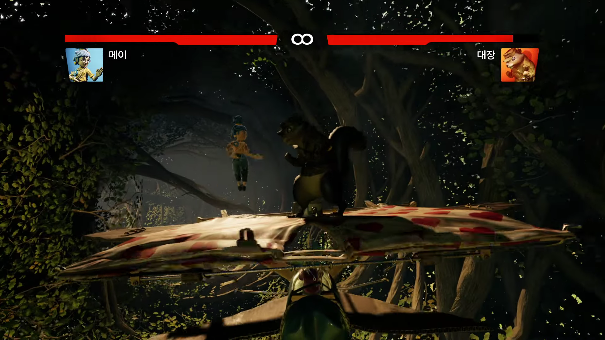
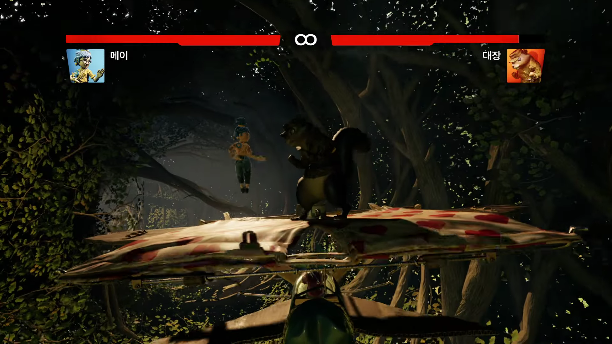

[SDGR] It takes two
친구가 준비물인 게임

오늘의 소개할 게임은 it takes two!
우선 게임의 줄거리는 코디와 메이의 부부싸움이 이혼으로 이어지게 된다.
그래서 딸인 로즈는 책에 부모님이 화해하기를 소망한다.
소원이 이루어져서 코디와 메이가 인형으로 변하여 협력해 서로의 관계를 회복해가면서
결국 화해하고 이혼하지 않게 된다.
게임의 장르는 나와 친구의 협동이 우선시 되고 다음으로는 퍼즐과 로맨스 코미디를 기반으로
만들어져 풀어가는 재미와 게임 캐릭터들의 캐미를 보는 재미도 있었다.

이 게임을 엔딩까지 플레이해 보았고 느꼈던 점은 한 단계를 제외한 모든 나머지 챕터들은 플레이하는 동안 지루함 없이 즐길 수 있었다. 게임의 중간중간에 미니게임이 있어서 미니게임을 찾는과정 플레이하는 과정이 한층 더 재미를 느낄 수 있었고, 게임의 장르도 퍼즐을 기반으로한 슈팅, 아케이드, 롤플레잉 등 다양한 장르로 변환 되기도 했다.
 


it takes two를 플레이하는 동안 게임의 그래픽은 단연 최고라고 말할 수 있는 부분이었고 장면 상황에 알맞은 사운드와 연출이 합쳐져서 게임을 하는 것이 아닌 영화의 한 장면을 시청하는 기분도 들었다. 게임의 UI도 보기 편하게 되어있고 조작감은 불편함이 없는 조작감이었다. 하지만 게임의 요소 중 하나인 분할 회면은 처음 접해보는 사람은 적응하면 불편하지는 않지만, 처음 할 때는 불편할 수도 있는 부분이다.

전체적인 게임의 난이도는 적당한 편이며 유저들 사이에서도 평판이 좋고 가격은 steam 페이지 정가 기준 44,000원이며 플레이 시간은 평균적으로 14~15시간 소요됩니다. 장점은 다양한 장르로 질릴 틈이 없고, 높은 그래픽으로 눈이 즐겁고, 여러 미니 게임과 완성도 높은 스토리를 즐길 수 있다는 점입니다. 단점을 찾아보자면 친구가 없으면 사실상 불가능한 게임이 입니다.